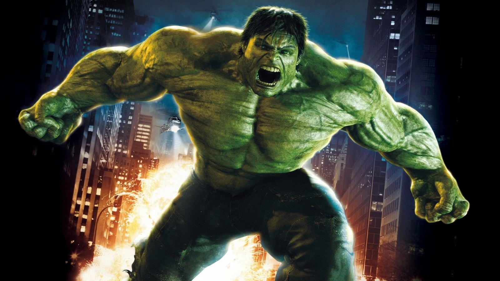

CLASSIFICATION : TITAN VERT
Le sujet **Robert Bruce Banner**, physicien nucléaire de renommée mondiale, est le résultat d'une exposition cataclysmique aux **rayons gamma**. Cette irradiation a créé un **alter ego** monstrueux, le **Hulk**, qui se manifeste en cas de stress émotionnel ou de forte colère. L'entité présente une **menace** de classe 9, tout en étant une ressource imprévisible pour la défense planétaire.
PROFIL DE L'HÔTE (BANNER)
- Nom : Robert Bruce Banner
- Statut : Fugitif/Chercheur
- Spécialité : Physique Nucléaire, Biochimie
- Condition : Multiple Personnalité Dissociative
ATTRIBUTS PHYSIQUES (HULK)
- Force Brute : Non Mesurable (Augmentation Exponentielle)
- Résilience : Peau quasi Impénétrable
- Régénération : Récupération tissulaire Extrême
- Énergie : Propulsion par Bonds Longue Portée
« Vous ne voulez pas me voir en colère. C'est quand vous me voyez en colère que les choses se cassent. »
Sujet GAMMA
Statut : ACTIF / NON-CONFINÉ